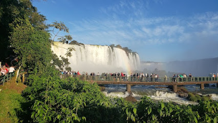

TURISMO ARGENTINO
BUENOS AIRES
Ciudad famosa por su vida nocturna, su cultura, sus arquitecura, lugares famosos como el teatro Colon y La Boca recibe 1.5 millones de turistas al año


Cataratas del Iguazu
Localizadas en el rio Iguazu entre la frontera con Brasil Parana y la provincia Argentina de Misiones, ha sido seleccionada como una de las 7 maravillas naturales del mundo reciben aproxidamente 1.5 millones de turistas al año, estas estan formadas por 275 saltos donde el 80% se ubican del lado argentino, su salto mas alto que tiene 80 metros de altura se le denomina la Garganta del Diablo 
Mendoza
La ciudad de Mendoza es una atractivo turistico despues de la ciudad de Buenos Aires, recibe aproximadamente 1.5 millones de turistas al año, es conocido por sus vinos , sus festivales y sus paisajes que contrastan con la cordillera de los Andres, los restaurantes constituyen el 35% de la oferta local con sus restaurantes
Bariloche
Ciudad patagonica ubicada en la provinciade Rio Negro, recibe aproximadamente 500.000 turistas al año sobretodo en epocas de invierno, es la ciudad patagonica mas poblada de Argentina con 130.000 ciudadanos, sus paisajes constratan los lagos y bosques , asi mismo se puede avistar el condor andino en ella, tambien es una ciudad importante para la economia industrial del pais de Argentina debido a que creacion de molinos eolicos,radares y satelites

El Calafate
Ciudad ubicada en la provincia de Santa Cruz, ubicada a unos 80km del glaciar Perito Moreno y ubicada a los lados del Lago Argentino, el segundo lago mas grande de America Latina, debe tambien su turismo a el Glaciar Upsala y el Cerro Fitz Roy, se estima que El Calafate recibe 664.000 turistas al año